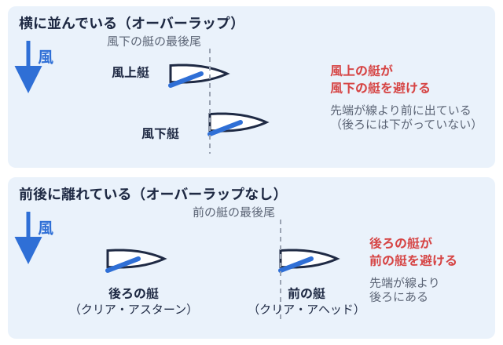
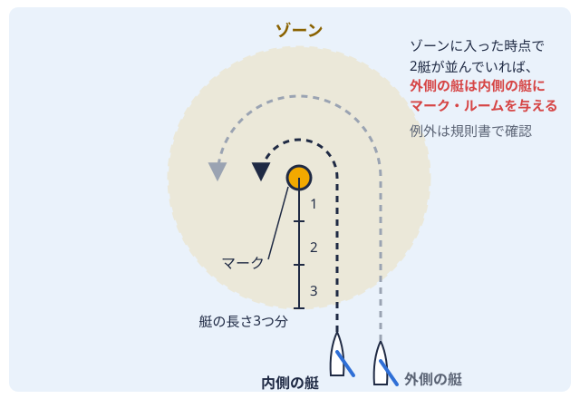

部活ガイド 2026-10-06
ヨットレースのルール基礎｜新入部員が最初に覚える航路権と2025年改定の要点
はじめての方向け
入部して初めての練習レースで、近くを走っていた先輩の艇から「スターボ艇が進む向きに対して右側。風を右側から受けて走る状態をスターボード・タックという。 ！」（自分が優先の艇だと知らせる声かけ）と声をかけられ、何が起きたのか分からないまま慌てて進路を変えた、という場面があるかもしれません。ヨットレースには車の道路交通法に似た「どちらが避けるか」の決まりがあり、それを知らないまま走ると、危険なだけでなく、気づかないうちに他の艇の邪魔をしてしまう場合があります。
！」（自分が優先の艇だと知らせる声かけ）と声をかけられ、何が起きたのか分からないまま慌てて進路を変えた、という場面があるかもしれません。ヨットレースには車の道路交通法に似た「どちらが避けるか」の決まりがあり、それを知らないまま走ると、危険なだけでなく、気づかないうちに他の艇の邪魔をしてしまう場合があります。
ヨットレースは「セーリング競技規則世界共通のヨットレースのルールブック。4年ごとに改訂される。（RRS：The Racing Rules of Sailing）」に沿って運営されており、現行は2025-2028年版です。この記事は規則書の代わりになるものではなく、新入部員が最初に押さえておきたい骨格を整理したものです。条文の要旨を編集部の言葉でまとめているため、正確な文言や細かい例外は、手元の規則書で確認してください。
ヨットレースのルールは「セーリング競技規則（RRS）」が土台
ルールの正本は世界共通のRRSで、日本では日本セーリング連盟（JSAF日本セーリング連盟。国内のセーリング競技を統括する公益財団法人。）が日本語版を発行しています。ここではまず、規則書の位置づけと入手方法を整理します。
4年ごとに改訂される世界共通の規則
RRSはWorld Sailingが4年ごとに改訂・発行しており、現行は2025-2028年版です（World Sailing｜The Racing Rules of Sailing）。
JSAFの規則書と正誤表の入手方法
日本語で読む場合は、JSAFが発行する規則書を使います。JSAFのページには、次の形で案内されています（日本セーリング連盟｜規則・規程）。
- 製本版：RRS2025-2028、装備規則、JSAF規程を収録。定価3,500円、JSAFメンバー価格2,800円
- スマートフォンアプリ：1,800円。RRS、装備規則（ERS）、WSRR、JSAF規程を収録
- 正誤表-5：2026年5月30日発行。正誤表-1〜4の内容も含まれる
大会ごとに規則が変わる場合がある
大会では「公示大会の主催者が事前に出す、参加資格や日程などを知らせる文書。（NoR）」や「帆走指示書大会ごとに主催者が出す、コースやルールの取り決めを書いた文書。（SI）」によって、規則の一部が変更されたり、追加の取り決めが示されたりする場合があります。全日本学生ヨット連盟の公式サイトからは、各大会の公示（RRS.org上）へ案内されています（全日本学生ヨット連盟）。規則書の内容を覚えたあとも、出場する大会の公示と帆走指示書を事前に読む習慣をつけておくと、思わぬ行き違いを減らせる可能性があります。
根底にあるのは基本原則
RRSの根底には、スポーツマンシップを土台にした基本原則があります。2025年版では、この基本原則は「規則ではなく原則」であることが定義の上で明確になりました（Dave Perry氏の解説資料による）。
最初に覚える4つの「避ける側」のルール（規則10〜13）
2艇が近づいたときに、どちらが避ける側かを定めているのが第2章です。まずは次の4つの場面を押さえましょう。なお、表に出てくる「タック風を艇の左右どちら側から受けているかを表す言葉。右ならスターボード、左ならポート。」は、風を艇の右側と左側のどちらから受けているかを表す言葉です（次の項で説明します）。
| 場面 | 避ける側 | 規則 |
|---|---|---|
| 反対のタックで走っている | ポート艇が進む向きに対して左側。風を左側から受けて走る状態をポート・タックという。・タックの艇がスターボード・タックの艇を避ける | 規則10 |
| 同じタックでオーバーラップ2艇が前後に重なって並んでいる状態。どちらも相手の最後尾より完全に後ろにはいないとき。  している | 風上自分の艇から見て、風が吹いてくる側。風上へ進むにはジグザグに走る必要がある。 の艇が風下自分の艇から見て、風が吹いていく側。風上の反対側。追い風で進む向き。の艇を避ける の艇が風下自分の艇から見て、風が吹いていく側。風上の反対側。追い風で進む向き。の艇を避ける | 規則11 |
| 同じタックでオーバーラップしていない | クリア・アスターン他の艇の最後尾から真横に引いた線より、艇全体が完全に後ろにいる状態。（後ろ）の艇がクリア・アヘッド後ろにいる艇から見て、その艇より艇全体が完全に前にいる状態。（前）の艇を避ける | 規則12 |
| タックの最中（風位風が吹いてくる方向。艇の先がここを向くと帆に風が当たらず、進めなくなる。を越えてからクロースホールドのコースになるまで） | タック中の艇が他の艇を避ける | 規則13 |
ポートとスターボードの見分け方
スターボード・タックとは、右舷側から風を受けている状態です。このとき、メインセールマストの後ろ側に張る、艇でいちばん大きな帆。風の力を進む力に変える。 のブーム大きな帆の下の辺を支える横棒。帆と一緒に左右へ振れ、方向転換の時は頭の上を通る。は左舷側に出ています。ポート・タックはその逆で、左舷側から風を受け、ブームが右舷側に出ている状態です。右舷・左舷といった艇まわりの用語は、大学ヨット部の用語基礎ガイドも参考にしてください。
のブーム大きな帆の下の辺を支える横棒。帆と一緒に左右へ振れ、方向転換の時は頭の上を通る。は左舷側に出ています。ポート・タックはその逆で、左舷側から風を受け、ブームが右舷側に出ている状態です。右舷・左舷といった艇まわりの用語は、大学ヨット部の用語基礎ガイドも参考にしてください。
「オーバーラップ」の考え方
オーバーラップとは、2艇が重なっている状態を指します。一般的な説明としては、後ろの艇の船体の一部が、前の艇の船尾を通る線より前に出ていれば、重なっているとみなされます。ただし、定義の正確な文言には細かい条件があるため、規則書の定義の項で確認してください。
声かけ（コール）の意味
「スターボ」などの声かけは、自分が優先艇であることを相手に知らせる慣習的なコールとして使われることがあります。ただし、コールしたからといって権利が生まれるわけではありません。規則上の権利は、そのときの2艇の状況によって決まります。
優先艇にも義務がある（規則14〜16）
優先艇であっても、接触を避ける義務やコースを変えるときの配慮が求められます。
- 規則14（接触の回避）：合理的に可能なら、接触を避けなければなりません。2025年版では、他の2艇の間に接触を起こさせないこと、艇と避けるべき物（運営艇など）の接触を起こさせないこと、という内容が加わりました（Dave Perry氏の解説資料による）
- 規則15（権利の取得）：新たに優先艇になった艇は、最初のうちは相手の艇に避ける余地を与える必要があります
- 規則16（コースの変更）：優先艇がコースを変えるときは、相手の艇に避ける余地を与える必要があります
優先艇が接触を避けられたのに避けなかった場合は、規則14違反としてペナルティの対象になりうる、とUS Sailingの解説資料でも説明されています（Rule 44.1 解説）。
マーク回航の「ゾーン」と「マーク・ルーム」（規則18）
マークの周囲3艇身（近い方の艇の船体長の3倍）の範囲をゾーンコース上の目印のブイ（マーク）の周囲、艇の長さ3つ分以内の範囲。ここでは回り方の特別なルールが働く。 
2025年版で整理された考え方
一般的な説明として、次のように理解されています。
- 2艇のうち最初の艇がゾーンに達した時点でオーバーラップしていない場合は、先にゾーンに達した艇がマーク・ルームを得ます。まだゾーンに達していない艇は、たとえ相手よりクリア・アヘッドの位置にいても、マーク・ルームを与える側になります
- 最初の艇がゾーンに達した時点でオーバーラップしている場合は、一般的には外側の艇が内側の艇にマーク・ルームを与えます
- 規則18.3：ポート側に回るマークのゾーン内で、ポートからスターボードへタックして相手艇の内側に入った艇は、規則18.2のマーク・ルームを得られません。2025年版では、相手艇もゾーン内でタックしていた場合でも同じ扱いとされ、適用の条件も「相手艇がマークにフェッチングしている（タックせずにマークを回れるコースにいる）とき」という形に整理されました
規則18が使われない場面にも注意
島や防波堤のように大きな「継続的障害物」がマークになっている場合は、規則18ではなく規則19が適用されます。2025年版で、継続的障害物が定義として新たに設けられました。また、風上に向かって走っている反対タック同士の艇の間など、規則18が適用されない場面もあります。詳細は規則18.1を規則書で確認してください。
ルールに違反したかもしれないとき：回転ペナルティ（規則44）
第2章に違反したかもしれないときは2回転ペナルティルール違反をしたかもしれないとき、レース中にその場で艇を回して償う方法。2回転か1回転。、マークに触れた（規則31）ときは1回転ペナルティを、その場で自ら履行できます。ただし、後述のようにリタイアが求められる場合や、大会によって別のペナルティに置き換えられる場合があります。
2回転ペナルティの概要
他の艇から十分に離れ、速やかに同じ方向へ2回転します。各回転には、タックを1回、ジャイブ追い風で進むとき、艇の後ろに風を通して向きを変え、帆が反対側へ大きく振れる方向転換。 を1回含みます。同じインシデントで第2章と規則31の両方に違反したかもしれない場合は、規則31分のペナルティは必要ありません。
を1回含みます。同じインシデントで第2章と規則31の両方に違反したかもしれない場合は、規則31分のペナルティは必要ありません。
一方で、負傷や重大な損傷を生じさせた場合、またはペナルティを履行しても大きな利益を得た場合は、リタイアが求められます。
別のペナルティに置き換えられる場合
公示や帆走指示書によって、スコアリング・ペナルティなど別のペナルティに置き換えられる場合があります（規則44.1）。2025年版では、スコアリング・ペナルティが「着順」ではなく「得点」を基準にする形へ変わりました。
抗議（プロテスト）について
抗議の手続きについては、ここでは概略にとどめます。2025年版では、抗議の記載内容は、抗議する艇、される艇、インシデントを特定すればよい形になりました（規則60.3）。観戦する立場から順位表のDNFDid Not Finish。スタートしたが、ゴールできなかった艇に付く成績表の略称。やOCSなどの表記を知りたい場合は、大学ヨットの大会の見方を参照してください。
2025-2028版で変わった主なポイント（2021-2024版との違い）
第2章の骨格は大きく変わっていませんが、上級生が以前の版で覚えた内容と違う点がいくつかあります。Dave Perry氏の解説資料をもとに、新入部員の目線で整理します。
| 項目 | 主な変更内容 |
|---|---|
| 規則14 | 他の2艇の間の接触や、艇と避けるべき物の接触を起こさせないことが加わった |
| 規則17の最終文 | 削除された。風上艇がタック中（規則13で避ける側）にオーバーラップが始まった場合でも、風下側になった艇は適切なコースより上を帆走できなくなった |
| 規則18.2 | 最初の艇がゾーンに達した時点でオーバーラップしているかどうかで場合分けする形に再構成された。オーバーラップしていなければ、先にゾーンに達した艇がマーク・ルームを得る |
| 規則18.3 | ポート側マークのゾーン内でのタックの扱いが、相手がタックした場合を含む形に整理された |
| 規則19.2(a) | 優先艇が障害物の通過側を選んでコースを変えるときは、相手に避ける余地を与える |
| 規則20.1 | 障害物でタックの余地を求めるときの、決まったコール（Room to tack）が定められた |
| 継続的障害物 | 定義が新設された |
| スコアリング・ペナルティ | 基準が着順から得点に変わった |
出典はDave Perry氏による「A Quick Overview of the Significant Rule and Game Changes in the 2025-2028 Racing Rules of Sailing」（US Sailing、2024年12月3日）です（PDF）。この資料自体が網羅的な一覧ではないと断っているため、上の表も変更点のすべてではありません。日本語の正式な条文は、JSAF発行の規則書で確認してください。
新入部員がルールを身につける順番（編集部の提案）
一度に全部を覚えようとせず、出会う頻度の高い場面から順に押さえていくのが一つの方法です。以下は編集部の提案であり、部によって教え方は異なります。上級生やコーチの指導を優先してください。
- スターボード・タックとポート・タックの判別と規則10：まずは自艇がどちらのタックかを言えるようにします。
- 規則11・12（同じタック）：風上艇と風下艇、前の艇と後ろの艇の関係を整理します。
- 規則13とタック直後の注意：タックしている最中は避ける側になります。技術面はタッキングとジャイビングの基礎記事もあわせて読むと、動きと規則を結びつけやすくなります
- ゾーンとマーク・ルーム：マークに近づく前に、自艇が内側か外側か、ゾーンに先に入ったのはどちらかを確認する練習をします
- 2回転・1回転ペナルティの練習：練習の中で回転の動きに慣れておきます。メニュー例は練習メニューの基礎記事にあります
未経験の方は未経験者向けガイドも参照してください。
大会に出る前に確認したいこと
ルールの基礎を押さえたら、出場する大会の日程と公示・帆走指示書を確認しましょう。ヨットマニアでは、次のページで大会の情報を調べられます。
なお、ヨットマニアの大学ディレクトリは、現在のところ関東36校と近畿北陸10校のみを掲載しています。ほかの水域については、成績PDFへのリンクのみの掲載です。
過去の成績表で、DNFやDSQ（失格）などの表記がどのように記録されているかを見ておくと、ルール違反が得点にどう影響するかをイメージしやすくなります。
まとめ
ヨットレースのルールの土台はRRSで、現行は2025-2028年版です。最初は、反対タックのポートとスターボード、同じタックの風上艇と風下艇、前の艇と後ろの艇、タック中の艇という4つの場面を押さえ、そのうえで優先艇の義務、マーク・ルーム、回転ペナルティへと広げていくと整理しやすくなります。
この記事は要旨をまとめたもので、正確な内容は規則書、大会ごとの違いは公示と帆走指示書で確認してください。
出典
- World Sailing｜The Racing Rules of Sailing https://www.sailing.org/racingrules/
- 日本セーリング連盟｜規則・規程 https://www.jsaf.or.jp/racing-rules/rule-reg/
- US Sailing｜Dave Perry「A Quick Overview of the Significant Rule and Game Changes in the 2025-2028 Racing Rules of Sailing」 https://www.ussailing.org/wp-content/uploads/2024/12/Quick-Overview-of-Changes-to-2025-Rules-Dave-Perry-3Dec2024.pdf
- US Sailing｜Rule 44.1 解説（Understanding the Racing Rules of Sailing through 2028 抜粋） https://www.ussailing.org/wp-content/uploads/2024/12/44.1.pdf
- 全日本学生ヨット連盟 https://www.zennihon201809.com/
PR
この部活・競技を応援したい方へ
体育会学生を支援するプラットフォーム「ツナカレ」で、応援できる部活を探せます。
PR
取材してほしい部活を募集中
あなたの部活・大会を取材してほしい方はこちらからご依頼ください。
オフシーズン・引退後に、長期インターンという選択
部活で培った力を実務で試す。16タイプ診断（30秒）で合う企業がわかります。